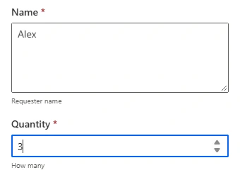

- Power Automate
- Level 9 · Integration and AI · 1 of 10
Calling a flow from Power Apps
A canvas app is good at screens and forms. Some work belongs on the server instead: sending email as a shared mailbox, writing to several lists at once, calling an API the app can't reach. The app can hand that work to a cloud flow and wait for an answer.
The app sends two values, the flow sends a message back
The flow starts with When Power Apps calls a flow (V2), which lets you declare typed inputs. The demo asks for a name (text) and a quantity (number). When you test it, the run panel shows those inputs as a small form:

A Compose builds a sentence, and Respond to a Power App or flow returns it, together with a request ID:

concat('Hello ', triggerBody()?['text'], ', your request for ', triggerBody()?['number'], ' items is logged.')| Piece | What it does |
|---|---|
triggerBody()?['text'] | The first text input. The V2 trigger names inputs by type (text, text_1, number...), not by the title you typed. |
triggerBody()?['number'] | The number input. |
concat(...) | Joins the pieces into one string. |
The app side
In Power Apps Studio, open the Power Automate pane and add the flow. It becomes an object named after the flow, with a Run() method that takes the inputs in order. If the flow is called Log request:
// OnSelect of a Submit button
Set(
varResult,
LogRequest.Run(txtName.Text, Value(txtQty.Text))
);
Notify(varResult.message, NotificationType.Success)varResult is a record with the fields from the response (message, requestid). Field names are lower-cased in the app.
Things that matter in real apps
- The app waits. Respond as early as you can and do slow work after the Respond action. The app doesn't see anything after it.
- Who runs it. By default the flow's connections run as the app user. That means each user needs access to the list or mailbox the flow uses.
- Changing inputs. After you add or rename a trigger input, remove and re-add the flow in the app (or refresh it in the pane). The old signature stays cached otherwise.
- Tables. To pass many rows, send a JSON string (
JSON(colItems)in the app) and use Parse JSON in the flow.
New to this? Start from the basics optional
Canvas app: a Power Apps app where you design the screens yourself.
Trigger input: a value the caller must supply when starting the flow, like a function parameter.
Response: data the flow sends back to whoever started it. Without a Respond action, the app gets nothing back.
Build it step by step optional
- Create an instant flow with the trigger When Power Apps calls a flow (V2).
- Add the inputs you need (Text, Number, Yes/No, Date, File) and give each a clear title and description.
- Do the work (for example Create item in SharePoint).
- Add Respond to a Power App or flow and add outputs: text, number, yes/no.
- Save. In the app, open the Power Automate pane, add the flow, then call
FlowName.Run(...)from a button.
Common mistakes
- Using the old (V1) trigger and "Ask in PowerApps". It works, but the inputs are untyped and break when renamed.
- Doing a long loop before the Respond action. The app's spinner runs the whole time and can time out.
- Forgetting that users need the flow's data permissions too.